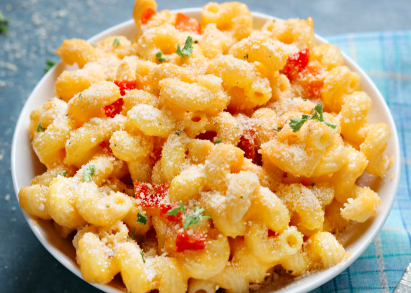

Best Vegan Mac & Cheese

When he was about 8 my kid proclaimed this version of vegan mac & cheese I slapped together one night: BEST MAC & CHEESE NON-NEGOTIABLE. Not to brag but, what do expect from the Mom who won the 'Best Cooker' award years prior?
Ingredients:
- Box of Cavatappi
- Bay Leaves
- Onion, fine dice
- Red Bell Pepper, small dice
- Hot Italian Beyond Sausage, chopped
- 2 bags Vegan Shredded Cheese(I like Daiya)
- Soymilk
- Chives
- Parsley
- Tarragon
- Thyme
- Powdered Rosemary
- Sage
- Dill
- Cayenne Pepper
- Ume Plum Vinegar
Steps:
- Cook the Cavatappi in salted water with the bay leaves added
- Drain, remove bay leaves and toss in a bit of olive oil
- Saute onion, red bell pepper and sausage in Earth Balance vegan margarine and set aside
- To the pasta add the cheese, and soymilk. Heat over low flame, stirring constantly until cheese is melted
- Add the sausage mixture and all the rest of the ingredients. Mix and serve